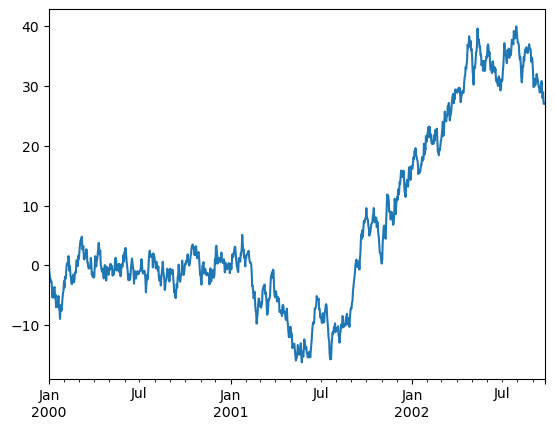
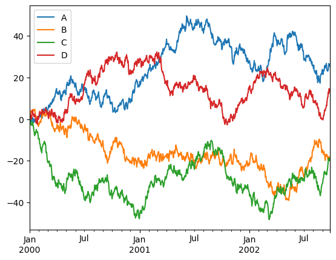

from pathlib import Path
data_path = Path('data')
if not data_path.exists():
data_path.mkdir(exist_ok=True)
data_file = data_path.joinpath('house_tiny.csv')
with open(data_file, 'w') as file:
file.write('''NumRooms,RoofType,Price
NA,NA,127500
2,NA,106000
4,Slate,178100
NA,NA,140000''')Notes for D2L Chapter 2 Section 2
2.2 Data Preprocessing
- Comma Separated Values (CSV) files are used for storing tabular (spreadsheet like) data.
- Each line corresponds to one record and consists of several ( comma separated ) fields.
import pandas and load the dataset using read_csv
import pandas as pd
data = pd.read_csv(data_file)
print(data) NumRooms RoofType Price
0 NaN NaN 127500
1 2.0 NaN 106000
2 4.0 Slate 178100
3 NaN NaN 140000Data Preparation
In supervised learning, we train models to predict a target value, given some sets of input values. Our first step in preprocessing the dataset is to separate out columns corresponding to input and columns corresponding to target values. We can select columns either
- by name or
- by using integer-location based indexing (iloc)inputs, targets = data.iloc[:, 0:2], data.iloc[:, 2]
print(f"Inputs \n {inputs}\n")
print(f"Targets \n {targets}")Inputs
NumRooms RoofType
0 NaN NaN
1 2.0 NaN
2 4.0 Slate
3 NaN NaN
Targets
0 127500
1 106000
2 178100
3 140000
Name: Price, dtype: int64Pandas replaced all CSV entries with value NA with a special NaN ( not a number ) value. These are called “missing values”. Depending on the context, missing values can be handled either via imputation or deletion.
- Imputation : replace missing values with estimates of their values
- Deletion : simply discard the columns or rows that contain missing values
For categorical input fields like “RoofType”, we can treat NaN as a category.
We can use pd.get_dummies() to convert this column into two separate columns.”RootType” column is now separated into “RoofType_Slate” and “RootType_nan”.
print('Before Imputation')
print(inputs)
print("\nAfter Category Imputation")
inputs = pd.get_dummies(inputs, columns=['RoofType'], dummy_na=True, dtype=int)
print(inputs)Before Imputation
NumRooms RoofType
0 NaN NaN
1 2.0 NaN
2 4.0 Slate
3 NaN NaN
After Category Imputation
NumRooms RoofType_Slate RoofType_nan
0 NaN 0 1
1 2.0 0 1
2 4.0 1 0
3 NaN 0 1For numerical missing value, one common way is to replace NaN entries with the mean value of the corresponding column.
inputs = inputs.fillna(inputs.mean())
print(inputs) NumRooms RoofType_Slate RoofType_nan
0 3.0 0 1
1 2.0 0 1
2 4.0 1 0
3 3.0 0 1Conversion to the tensor format
Now that we have separated inputs and targets columns, we can load them into a tensor.
import torch
X, y = torch.tensor(inputs.values), torch.tensor(targets.values)
X, y(tensor([[3., 0., 1.],
[2., 0., 1.],
[4., 1., 0.],
[3., 0., 1.]], dtype=torch.float64),
tensor([127500, 106000, 178100, 140000]))Notes for 10 minutes to pands
10 Minutes to Pandas
import pandas as pd
import numpy as npObject Creation
Creating a Series by passing a list of values
s = pd.Series([1, 3, 5, np.nan, 6, 8])Creating a DataFrame by passing a NumPy array, with a datetime index using date_range()
1 + 12dates = pd.date_range("20230719", periods=6)
print(dates)DatetimeIndex(['2023-07-19', '2023-07-20', '2023-07-21', '2023-07-22',
'2023-07-23', '2023-07-24'],
dtype='datetime64[ns]', freq='D')df = pd.DataFrame(np.random.randn(6,4), index=dates, columns=list("ABCD"))
df| A | B | C | D | |
|---|---|---|---|---|
| 2023-07-19 | -0.882153 | -0.519798 | 1.191473 | -0.365119 |
| 2023-07-20 | -0.743235 | -1.251854 | -1.297950 | 0.837160 |
| 2023-07-21 | -1.441845 | 1.072803 | 1.595452 | 0.279867 |
| 2023-07-22 | 0.837404 | -1.051493 | -0.894736 | 0.117740 |
| 2023-07-23 | 0.110210 | -0.240610 | 1.276668 | -0.659641 |
| 2023-07-24 | 0.542348 | -1.661006 | 0.360272 | -0.452072 |
Creating a DataFrame by passing a dictionary of objects
df2 = pd.DataFrame(
{
"A" : 1.,
"B" : pd.Timestamp("20230721"),
"C" : pd.Series(1, index=list(range(6)), dtype="float32"),
"D" : np.array([3] * 6, dtype="int32"),
"E" : pd.Categorical(["test", "train","test", "train", "test", "train"]),
"F" : "foo",
}
)
df2| A | B | C | D | E | F | |
|---|---|---|---|---|---|---|
| 0 | 1.0 | 2023-07-21 | 1.0 | 3 | test | foo |
| 1 | 1.0 | 2023-07-21 | 1.0 | 3 | train | foo |
| 2 | 1.0 | 2023-07-21 | 1.0 | 3 | test | foo |
| 3 | 1.0 | 2023-07-21 | 1.0 | 3 | train | foo |
| 4 | 1.0 | 2023-07-21 | 1.0 | 3 | test | foo |
| 5 | 1.0 | 2023-07-21 | 1.0 | 3 | train | foo |
df2.dtypesA float64
B datetime64[ns]
C float32
D int32
E category
F object
dtype: objectViewing Data
DataFrame.head(): to view top rowsDataFrame.tail(): to view bottom rows
df.head()| A | B | C | D | |
|---|---|---|---|---|
| 2023-07-19 | -0.882153 | -0.519798 | 1.191473 | -0.365119 |
| 2023-07-20 | -0.743235 | -1.251854 | -1.297950 | 0.837160 |
| 2023-07-21 | -1.441845 | 1.072803 | 1.595452 | 0.279867 |
| 2023-07-22 | 0.837404 | -1.051493 | -0.894736 | 0.117740 |
| 2023-07-23 | 0.110210 | -0.240610 | 1.276668 | -0.659641 |
df.tail(3)| A | B | C | D | |
|---|---|---|---|---|
| 2023-07-22 | 0.837404 | -1.051493 | -0.894736 | 0.117740 |
| 2023-07-23 | 0.110210 | -0.240610 | 1.276668 | -0.659641 |
| 2023-07-24 | 0.542348 | -1.661006 | 0.360272 | -0.452072 |
df.indexDatetimeIndex(['2023-07-19', '2023-07-20', '2023-07-21', '2023-07-22',
'2023-07-23', '2023-07-24'],
dtype='datetime64[ns]', freq='D')df.columnsIndex(['A', 'B', 'C', 'D'], dtype='object')DataFrame.to_numpy() gives NumPy representation of the underlying data.
It can be expensive operation if DataFrame has columns with different data types.
NumPy arrays have only one dtype for entire array, while Pandas DataFrames have one dtype per column.
When we call DataFrame.to_numpy(), pandas will find the Numpy dtype that can hold all of the dtypes in the DataFrame, which probably might end up being object.
Side Note about %time and %%time
%time measures execution time of the next line.
%%time measures execution time of the whole cell.
%%time
df.to_numpy()CPU times: user 23 µs, sys: 14 µs, total: 37 µs
Wall time: 42.9 µsarray([[-0.88215262, -0.51979766, 1.19147342, -0.36511911],
[-0.74323485, -1.25185408, -1.29795001, 0.83716014],
[-1.44184489, 1.07280347, 1.59545244, 0.27986697],
[ 0.83740402, -1.05149342, -0.89473616, 0.11773951],
[ 0.11020985, -0.24061037, 1.27666783, -0.65964116],
[ 0.54234772, -1.66100567, 0.36027161, -0.45207181]])%%time
df2.to_numpy()CPU times: user 552 µs, sys: 327 µs, total: 879 µs
Wall time: 915 µsarray([[1.0, Timestamp('2023-07-21 00:00:00'), 1.0, 3, 'test', 'foo'],
[1.0, Timestamp('2023-07-21 00:00:00'), 1.0, 3, 'train', 'foo'],
[1.0, Timestamp('2023-07-21 00:00:00'), 1.0, 3, 'test', 'foo'],
[1.0, Timestamp('2023-07-21 00:00:00'), 1.0, 3, 'train', 'foo'],
[1.0, Timestamp('2023-07-21 00:00:00'), 1.0, 3, 'test', 'foo'],
[1.0, Timestamp('2023-07-21 00:00:00'), 1.0, 3, 'train', 'foo']],
dtype=object)DataFrame.to_numpy() does not include the index or column labels in the output.
describe() shows a quick statistics summary of data.
df.describe()| A | B | C | D | |
|---|---|---|---|---|
| count | 6.000000 | 6.000000 | 6.000000 | 6.000000 |
| mean | -0.262878 | -0.608660 | 0.371863 | -0.040344 |
| std | 0.894697 | 0.968288 | 1.214931 | 0.557865 |
| min | -1.441845 | -1.661006 | -1.297950 | -0.659641 |
| 25% | -0.847423 | -1.201764 | -0.580984 | -0.430334 |
| 50% | -0.316512 | -0.785646 | 0.775873 | -0.123690 |
| 75% | 0.434313 | -0.310407 | 1.255369 | 0.239335 |
| max | 0.837404 | 1.072803 | 1.595452 | 0.837160 |
Transposing data
df.T| 2023-07-19 | 2023-07-20 | 2023-07-21 | 2023-07-22 | 2023-07-23 | 2023-07-24 | |
|---|---|---|---|---|---|---|
| A | -0.882153 | -0.743235 | -1.441845 | 0.837404 | 0.110210 | 0.542348 |
| B | -0.519798 | -1.251854 | 1.072803 | -1.051493 | -0.240610 | -1.661006 |
| C | 1.191473 | -1.297950 | 1.595452 | -0.894736 | 1.276668 | 0.360272 |
| D | -0.365119 | 0.837160 | 0.279867 | 0.117740 | -0.659641 | -0.452072 |
DataFrame.sort_index() sorts by an index.
df.sort_index(axis=1, ascending=False)| D | C | B | A | |
|---|---|---|---|---|
| 2023-07-19 | -0.365119 | 1.191473 | -0.519798 | -0.882153 |
| 2023-07-20 | 0.837160 | -1.297950 | -1.251854 | -0.743235 |
| 2023-07-21 | 0.279867 | 1.595452 | 1.072803 | -1.441845 |
| 2023-07-22 | 0.117740 | -0.894736 | -1.051493 | 0.837404 |
| 2023-07-23 | -0.659641 | 1.276668 | -0.240610 | 0.110210 |
| 2023-07-24 | -0.452072 | 0.360272 | -1.661006 | 0.542348 |
DataFrame.sort_values() sorts by values.
df.sort_values(by="D")| A | B | C | D | |
|---|---|---|---|---|
| 2023-07-23 | 0.110210 | -0.240610 | 1.276668 | -0.659641 |
| 2023-07-24 | 0.542348 | -1.661006 | 0.360272 | -0.452072 |
| 2023-07-19 | -0.882153 | -0.519798 | 1.191473 | -0.365119 |
| 2023-07-22 | 0.837404 | -1.051493 | -0.894736 | 0.117740 |
| 2023-07-21 | -1.441845 | 1.072803 | 1.595452 | 0.279867 |
| 2023-07-20 | -0.743235 | -1.251854 | -1.297950 | 0.837160 |
Selection
Getting
Selecting a single column - df[“A”] - df.A
df["A"]2023-07-19 -0.882153
2023-07-20 -0.743235
2023-07-21 -1.441845
2023-07-22 0.837404
2023-07-23 0.110210
2023-07-24 0.542348
Freq: D, Name: A, dtype: float64Selecting via [] (__getitem__)
df[0:3]| A | B | C | D | |
|---|---|---|---|---|
| 2023-07-19 | -0.882153 | -0.519798 | 1.191473 | -0.365119 |
| 2023-07-20 | -0.743235 | -1.251854 | -1.297950 | 0.837160 |
| 2023-07-21 | -1.441845 | 1.072803 | 1.595452 | 0.279867 |
df["20230719":"20230722"]| A | B | C | D | |
|---|---|---|---|---|
| 2023-07-19 | -0.882153 | -0.519798 | 1.191473 | -0.365119 |
| 2023-07-20 | -0.743235 | -1.251854 | -1.297950 | 0.837160 |
| 2023-07-21 | -1.441845 | 1.072803 | 1.595452 | 0.279867 |
| 2023-07-22 | 0.837404 | -1.051493 | -0.894736 | 0.117740 |
Selection by label
For getting a cross section using a label:
df.loc[dates[0]]A -0.882153
B -0.519798
C 1.191473
D -0.365119
Name: 2023-07-19 00:00:00, dtype: float64Selecting on a multi-axis by label
df.loc[:, ["A", "B"]]| A | B | |
|---|---|---|
| 2023-07-19 | -0.882153 | -0.519798 |
| 2023-07-20 | -0.743235 | -1.251854 |
| 2023-07-21 | -1.441845 | 1.072803 |
| 2023-07-22 | 0.837404 | -1.051493 |
| 2023-07-23 | 0.110210 | -0.240610 |
| 2023-07-24 | 0.542348 | -1.661006 |
showing label slicing, both endpoints are included
df| A | B | C | D | |
|---|---|---|---|---|
| 2023-07-19 | -0.882153 | -0.519798 | 1.191473 | -0.365119 |
| 2023-07-20 | -0.743235 | -1.251854 | -1.297950 | 0.837160 |
| 2023-07-21 | -1.441845 | 1.072803 | 1.595452 | 0.279867 |
| 2023-07-22 | 0.837404 | -1.051493 | -0.894736 | 0.117740 |
| 2023-07-23 | 0.110210 | -0.240610 | 1.276668 | -0.659641 |
| 2023-07-24 | 0.542348 | -1.661006 | 0.360272 | -0.452072 |
df.loc["20230719" : "20230722", ["A", "B"]]| A | B | |
|---|---|---|
| 2023-07-19 | -0.882153 | -0.519798 |
| 2023-07-20 | -0.743235 | -1.251854 |
| 2023-07-21 | -1.441845 | 1.072803 |
| 2023-07-22 | 0.837404 | -1.051493 |
Reduction in the dimensions of the returned object
df.loc["20230722", ["A", "B"]]A 0.837404
B -1.051493
Name: 2023-07-22 00:00:00, dtype: float64For getting a scalar value
%%time
df.loc["20230722", "A"]CPU times: user 215 µs, sys: 124 µs, total: 339 µs
Wall time: 373 µs0.8374040236752622For getting fast access to scalar, same as the previous method
%%time
df.at["20230722", "A"]CPU times: user 116 µs, sys: 68 µs, total: 184 µs
Wall time: 205 µs0.8374040236752622Selection by position
Select via the position of the passed integers
df.iloc[3]A 0.837404
B -1.051493
C -0.894736
D 0.117740
Name: 2023-07-22 00:00:00, dtype: float64df.iloc[3:5, 0:2]| A | B | |
|---|---|---|
| 2023-07-22 | 0.837404 | -1.051493 |
| 2023-07-23 | 0.110210 | -0.240610 |
by list of integer positions, similar to NumPy
df.iloc[[1,2,4], [0,2]]| A | C | |
|---|---|---|
| 2023-07-20 | -0.743235 | -1.297950 |
| 2023-07-21 | -1.441845 | 1.595452 |
| 2023-07-23 | 0.110210 | 1.276668 |
For Slicing rows explicitly
df.iloc[1:3, :]| A | B | C | D | |
|---|---|---|---|---|
| 2023-07-20 | -0.743235 | -1.251854 | -1.297950 | 0.837160 |
| 2023-07-21 | -1.441845 | 1.072803 | 1.595452 | 0.279867 |
For slicing columns, explicitly
df.iloc[:, 1:3]| B | C | |
|---|---|---|
| 2023-07-19 | -0.519798 | 1.191473 |
| 2023-07-20 | -1.251854 | -1.297950 |
| 2023-07-21 | 1.072803 | 1.595452 |
| 2023-07-22 | -1.051493 | -0.894736 |
| 2023-07-23 | -0.240610 | 1.276668 |
| 2023-07-24 | -1.661006 | 0.360272 |
For getting a value explicitly
%time df.iloc[1,1]CPU times: user 74 µs, sys: 42 µs, total: 116 µs
Wall time: 128 µs-1.251854084728132For getting fast access,
%time df.iat[1,1]CPU times: user 109 µs, sys: 0 ns, total: 109 µs
Wall time: 121 µs-1.251854084728132Boolean Indexing
Using single column’s values to select data
df[df["B"] > 0]| A | B | C | D | |
|---|---|---|---|---|
| 2023-07-21 | -1.441845 | 1.072803 | 1.595452 | 0.279867 |
Selecting values from a DataFrame where a boolean condition is met:
df[df > 0]| A | B | C | D | |
|---|---|---|---|---|
| 2023-07-19 | NaN | NaN | 1.191473 | NaN |
| 2023-07-20 | NaN | NaN | NaN | 0.837160 |
| 2023-07-21 | NaN | 1.072803 | 1.595452 | 0.279867 |
| 2023-07-22 | 0.837404 | NaN | NaN | 0.117740 |
| 2023-07-23 | 0.110210 | NaN | 1.276668 | NaN |
| 2023-07-24 | 0.542348 | NaN | 0.360272 | NaN |
Using isin() method for filtering
df2 = df.copy()
df2["E"] = ["one", "one", "two", "three", "four", "three"]
df2| A | B | C | D | E | |
|---|---|---|---|---|---|
| 2023-07-19 | -0.882153 | -0.519798 | 1.191473 | -0.365119 | one |
| 2023-07-20 | -0.743235 | -1.251854 | -1.297950 | 0.837160 | one |
| 2023-07-21 | -1.441845 | 1.072803 | 1.595452 | 0.279867 | two |
| 2023-07-22 | 0.837404 | -1.051493 | -0.894736 | 0.117740 | three |
| 2023-07-23 | 0.110210 | -0.240610 | 1.276668 | -0.659641 | four |
| 2023-07-24 | 0.542348 | -1.661006 | 0.360272 | -0.452072 | three |
df2[df2["E"].isin(["two", "four"])]| A | B | C | D | E | |
|---|---|---|---|---|---|
| 2023-07-21 | -1.441845 | 1.072803 | 1.595452 | 0.279867 | two |
| 2023-07-23 | 0.110210 | -0.240610 | 1.276668 | -0.659641 | four |
Setting
Setting a new column automatically aligns the data by the indexes
s1 = pd.Series([1,2,3,4,5,6], index=pd.date_range("20230719", periods=6))
s12023-07-19 1
2023-07-20 2
2023-07-21 3
2023-07-22 4
2023-07-23 5
2023-07-24 6
Freq: D, dtype: int64df["F"] = s1Setting values by label
df.at[dates[0], "A"] = 0
df| A | B | C | D | F | |
|---|---|---|---|---|---|
| 2023-07-19 | 0.000000 | -0.519798 | 1.191473 | -0.365119 | 1 |
| 2023-07-20 | -0.743235 | -1.251854 | -1.297950 | 0.837160 | 2 |
| 2023-07-21 | -1.441845 | 1.072803 | 1.595452 | 0.279867 | 3 |
| 2023-07-22 | 0.837404 | -1.051493 | -0.894736 | 0.117740 | 4 |
| 2023-07-23 | 0.110210 | -0.240610 | 1.276668 | -0.659641 | 5 |
| 2023-07-24 | 0.542348 | -1.661006 | 0.360272 | -0.452072 | 6 |
Setting values by position
df.iat[0, 1] = 0
df| A | B | C | D | F | |
|---|---|---|---|---|---|
| 2023-07-19 | 0.000000 | 0.000000 | 1.191473 | -0.365119 | 1 |
| 2023-07-20 | -0.743235 | -1.251854 | -1.297950 | 0.837160 | 2 |
| 2023-07-21 | -1.441845 | 1.072803 | 1.595452 | 0.279867 | 3 |
| 2023-07-22 | 0.837404 | -1.051493 | -0.894736 | 0.117740 | 4 |
| 2023-07-23 | 0.110210 | -0.240610 | 1.276668 | -0.659641 | 5 |
| 2023-07-24 | 0.542348 | -1.661006 | 0.360272 | -0.452072 | 6 |
Setting by assigning with a NumPy array
df.loc[:, "D"] = np.array([5] * len(df))
df| A | B | C | D | F | |
|---|---|---|---|---|---|
| 2023-07-19 | 0.000000 | 0.000000 | 1.191473 | 5.0 | 1 |
| 2023-07-20 | -0.743235 | -1.251854 | -1.297950 | 5.0 | 2 |
| 2023-07-21 | -1.441845 | 1.072803 | 1.595452 | 5.0 | 3 |
| 2023-07-22 | 0.837404 | -1.051493 | -0.894736 | 5.0 | 4 |
| 2023-07-23 | 0.110210 | -0.240610 | 1.276668 | 5.0 | 5 |
| 2023-07-24 | 0.542348 | -1.661006 | 0.360272 | 5.0 | 6 |
A where operation with setting
df2 = df.copy()
df2[df2 > 0] = -df2
df2| A | B | C | D | F | |
|---|---|---|---|---|---|
| 2023-07-19 | 0.000000 | 0.000000 | -1.191473 | -5.0 | -1 |
| 2023-07-20 | -0.743235 | -1.251854 | -1.297950 | -5.0 | -2 |
| 2023-07-21 | -1.441845 | -1.072803 | -1.595452 | -5.0 | -3 |
| 2023-07-22 | -0.837404 | -1.051493 | -0.894736 | -5.0 | -4 |
| 2023-07-23 | -0.110210 | -0.240610 | -1.276668 | -5.0 | -5 |
| 2023-07-24 | -0.542348 | -1.661006 | -0.360272 | -5.0 | -6 |
Missing data
pandas primarily uses the value np.nan to represent missing data.
Reindexing allows us to change/add/delete the index on a specified axis.
df1 = df.reindex(index=dates[:4], columns=list(df.columns) + ["E"])
df1.loc[dates[0]: dates[1], "E"] = 1
df1| A | B | C | D | F | E | |
|---|---|---|---|---|---|---|
| 2023-07-19 | 0.000000 | 0.000000 | 1.191473 | 5.0 | 1 | 1.0 |
| 2023-07-20 | -0.743235 | -1.251854 | -1.297950 | 5.0 | 2 | 1.0 |
| 2023-07-21 | -1.441845 | 1.072803 | 1.595452 | 5.0 | 3 | NaN |
| 2023-07-22 | 0.837404 | -1.051493 | -0.894736 | 5.0 | 4 | NaN |
DataFrame.dropna() drops any rows that have missing data
df1.dropna(how="any")| A | B | C | D | F | E | |
|---|---|---|---|---|---|---|
| 2023-07-19 | 0.000000 | 0.000000 | 1.191473 | 5.0 | 1 | 1.0 |
| 2023-07-20 | -0.743235 | -1.251854 | -1.297950 | 5.0 | 2 | 1.0 |
DataFrame.fillna() fills missing data
df1.fillna(value=5)| A | B | C | D | F | E | |
|---|---|---|---|---|---|---|
| 2023-07-19 | 0.000000 | 0.000000 | 1.191473 | 5.0 | 1 | 1.0 |
| 2023-07-20 | -0.743235 | -1.251854 | -1.297950 | 5.0 | 2 | 1.0 |
| 2023-07-21 | -1.441845 | 1.072803 | 1.595452 | 5.0 | 3 | 5.0 |
| 2023-07-22 | 0.837404 | -1.051493 | -0.894736 | 5.0 | 4 | 5.0 |
isna() gets the boolean mask where values are nan.
pd.isna(df1)| A | B | C | D | F | E | |
|---|---|---|---|---|---|---|
| 2023-07-19 | False | False | False | False | False | False |
| 2023-07-20 | False | False | False | False | False | False |
| 2023-07-21 | False | False | False | False | False | True |
| 2023-07-22 | False | False | False | False | False | True |
Operations
Stats
Operations in general exclude missing data.
df.mean()A -0.115853
B -0.522027
C 0.371863
D 5.000000
F 3.500000
dtype: float64df.mean(1)2023-07-19 1.438295
2023-07-20 0.741392
2023-07-21 1.845282
2023-07-22 1.578235
2023-07-23 2.229253
2023-07-24 2.048323
Freq: D, dtype: float64For opearting with objects that have different dimensionality and need alignment, pandas automatically broadcasts along the specified dimension.
datesDatetimeIndex(['2023-07-19', '2023-07-20', '2023-07-21', '2023-07-22',
'2023-07-23', '2023-07-24'],
dtype='datetime64[ns]', freq='D')shift : Shift index by desired number of time frequency increments.
This method is for shifting the values of datetime-like indexes by a specified time increment a given number of times.
s = pd.Series([1, 3, 5, np.nan, 6, 8], index=dates).shift(2)
s2023-07-19 NaN
2023-07-20 NaN
2023-07-21 1.0
2023-07-22 3.0
2023-07-23 5.0
2023-07-24 NaN
Freq: D, dtype: float64df| A | B | C | D | F | |
|---|---|---|---|---|---|
| 2023-07-19 | 0.000000 | 0.000000 | 1.191473 | 5.0 | 1 |
| 2023-07-20 | -0.743235 | -1.251854 | -1.297950 | 5.0 | 2 |
| 2023-07-21 | -1.441845 | 1.072803 | 1.595452 | 5.0 | 3 |
| 2023-07-22 | 0.837404 | -1.051493 | -0.894736 | 5.0 | 4 |
| 2023-07-23 | 0.110210 | -0.240610 | 1.276668 | 5.0 | 5 |
| 2023-07-24 | 0.542348 | -1.661006 | 0.360272 | 5.0 | 6 |
df.sub(s, axis="index")| A | B | C | D | F | |
|---|---|---|---|---|---|
| 2023-07-19 | NaN | NaN | NaN | NaN | NaN |
| 2023-07-20 | NaN | NaN | NaN | NaN | NaN |
| 2023-07-21 | -2.441845 | 0.072803 | 0.595452 | 4.0 | 2.0 |
| 2023-07-22 | -2.162596 | -4.051493 | -3.894736 | 2.0 | 1.0 |
| 2023-07-23 | -4.889790 | -5.240610 | -3.723332 | 0.0 | 0.0 |
| 2023-07-24 | NaN | NaN | NaN | NaN | NaN |
Apply
df.apply(np.cumsum)| A | B | C | D | F | |
|---|---|---|---|---|---|
| 2023-07-19 | 0.000000 | 0.000000 | 1.191473 | 5.0 | 1 |
| 2023-07-20 | -0.743235 | -1.251854 | -0.106477 | 10.0 | 3 |
| 2023-07-21 | -2.185080 | -0.179051 | 1.488976 | 15.0 | 6 |
| 2023-07-22 | -1.347676 | -1.230544 | 0.594240 | 20.0 | 10 |
| 2023-07-23 | -1.237466 | -1.471154 | 1.870908 | 25.0 | 15 |
| 2023-07-24 | -0.695118 | -3.132160 | 2.231179 | 30.0 | 21 |
Histogramming
s = pd.Series(np.random.randint(0, 7, size=10))
s 0 3
1 0
2 6
3 5
4 1
5 1
6 0
7 1
8 2
9 5
dtype: int64s.value_counts()1 3
0 2
5 2
3 1
6 1
2 1
Name: count, dtype: int64String Methods
s = pd.Series(["A", "B", "C", "Aaba", "Baca", np.nan, "CABA", "dog", "cat"])
s.str.lower()0 a
1 b
2 c
3 aaba
4 baca
5 NaN
6 caba
7 dog
8 cat
dtype: objectMerge
Concat
df = pd.DataFrame(np.random.randn(10, 4))
df| 0 | 1 | 2 | 3 | |
|---|---|---|---|---|
| 0 | 0.372769 | -0.346441 | -1.706328 | -1.004275 |
| 1 | -1.511273 | -1.057781 | -1.078231 | 0.936687 |
| 2 | 1.236382 | -1.434123 | 0.502913 | -0.629513 |
| 3 | 0.885381 | -0.593661 | 1.997468 | 0.678717 |
| 4 | -1.434716 | -1.697377 | 0.585448 | -0.327443 |
| 5 | -0.437827 | 0.298824 | 0.162045 | 0.719636 |
| 6 | -0.215078 | -0.115372 | -0.219809 | 1.326141 |
| 7 | -0.177327 | -0.165627 | -0.789062 | -0.389858 |
| 8 | 0.151773 | -0.342665 | -0.031968 | -0.457642 |
| 9 | -0.248350 | -0.547784 | 0.429245 | -1.644430 |
# break it into pieces
pieces = [df[:3], df[3:7], df[7:]]
pd.concat(pieces)| 0 | 1 | 2 | 3 | |
|---|---|---|---|---|
| 0 | 0.372769 | -0.346441 | -1.706328 | -1.004275 |
| 1 | -1.511273 | -1.057781 | -1.078231 | 0.936687 |
| 2 | 1.236382 | -1.434123 | 0.502913 | -0.629513 |
| 3 | 0.885381 | -0.593661 | 1.997468 | 0.678717 |
| 4 | -1.434716 | -1.697377 | 0.585448 | -0.327443 |
| 5 | -0.437827 | 0.298824 | 0.162045 | 0.719636 |
| 6 | -0.215078 | -0.115372 | -0.219809 | 1.326141 |
| 7 | -0.177327 | -0.165627 | -0.789062 | -0.389858 |
| 8 | 0.151773 | -0.342665 | -0.031968 | -0.457642 |
| 9 | -0.248350 | -0.547784 | 0.429245 | -1.644430 |
Side Note about Adding
Adding a column to a DataFrame is relatively fast. However, adding a row requires a copy and may be expensive.
Recommand passing a pre-built list of records to the DataFrame constructor instead of building a DataFrame by iteratively appending records to it.
Join
merge enables SQL style join types along specific columns.
left = pd.DataFrame({"key" : ["foo", "foo"], "lval" : [1, 2]})
right = pd.DataFrame({"key" : ["foo", "foo"], "rval" : [4, 5]})left| key | lval | |
|---|---|---|
| 0 | foo | 1 |
| 1 | foo | 2 |
right| key | rval | |
|---|---|---|
| 0 | foo | 4 |
| 1 | foo | 5 |
pd.merge(left, right, on="key")| key | lval | rval | |
|---|---|---|---|
| 0 | foo | 1 | 4 |
| 1 | foo | 1 | 5 |
| 2 | foo | 2 | 4 |
| 3 | foo | 2 | 5 |
left = pd.DataFrame({"key" : ["foo", "bar"], "lval" : [1, 2]})
right = pd.DataFrame({"key" : ["foo", "bar"], "rval" : [4, 5]})left| key | lval | |
|---|---|---|
| 0 | foo | 1 |
| 1 | bar | 2 |
right| key | rval | |
|---|---|---|
| 0 | foo | 4 |
| 1 | bar | 5 |
pd.merge(left, right, on="key")| key | lval | rval | |
|---|---|---|---|
| 0 | foo | 1 | 4 |
| 1 | bar | 2 | 5 |
Grouping
Group by : a process involving one or more of the following steps: - Splitting - Applying - Combining
df = pd.DataFrame(
{
"A": ["foo", "bar", "foo", "bar", "foo", "bar", "foo", "foo"],
"B": ["one", "one", "two", "three", "two", "two", "one", "three"],
"C": np.random.randn(8),
"D": np.random.randn(8),
})
df| A | B | C | D | |
|---|---|---|---|---|
| 0 | foo | one | 0.426356 | 0.853049 |
| 1 | bar | one | 0.891177 | 0.000043 |
| 2 | foo | two | -0.731032 | 1.247819 |
| 3 | bar | three | 1.137938 | 0.469195 |
| 4 | foo | two | -0.367243 | -1.080192 |
| 5 | bar | two | 0.663225 | 0.036520 |
| 6 | foo | one | -0.145269 | -2.061565 |
| 7 | foo | three | -0.957018 | -1.726286 |
df.groupby("A")[["C", "D"]].sum()| C | D | |
|---|---|---|
| A | ||
| bar | 2.692340 | 0.505758 |
| foo | -1.774205 | -2.767175 |
df.groupby(["B", "A"]).sum()| C | D | ||
|---|---|---|---|
| B | A | ||
| one | bar | 0.891177 | 0.000043 |
| foo | 0.281087 | -1.208516 | |
| three | bar | 1.137938 | 0.469195 |
| foo | -0.957018 | -1.726286 | |
| two | bar | 0.663225 | 0.036520 |
| foo | -1.098275 | 0.167627 |
Reshaping
tuples = list(
zip(
["bar", "bar", "baz", "baz", "foo", "foo", "qux", "qux"],
["one", "two", "one", "two", "one", "two", "one", "two"],
)
)
index = pd.MultiIndex.from_tuples(tuples, names=["first", "second"])
df = pd.DataFrame(np.random.randn(8, 2), index=index, columns=["A", "B"])
df2 = df[:4]
df2| A | B | ||
|---|---|---|---|
| first | second | ||
| bar | one | 0.893822 | 1.314928 |
| two | -0.679436 | -0.266448 | |
| baz | one | -1.105568 | 1.354243 |
| two | -0.095790 | 0.052857 |
stack() method compresses a level in the DataFrame’s columns
stacked = df2.stack()
stackedfirst second
bar one A 0.893822
B 1.314928
two A -0.679436
B -0.266448
baz one A -1.105568
B 1.354243
two A -0.095790
B 0.052857
dtype: float64stacked.unstack()| A | B | ||
|---|---|---|---|
| first | second | ||
| bar | one | 0.893822 | 1.314928 |
| two | -0.679436 | -0.266448 | |
| baz | one | -1.105568 | 1.354243 |
| two | -0.095790 | 0.052857 |
stacked.unstack(1)| second | one | two | |
|---|---|---|---|
| first | |||
| bar | A | 0.893822 | -0.679436 |
| B | 1.314928 | -0.266448 | |
| baz | A | -1.105568 | -0.095790 |
| B | 1.354243 | 0.052857 |
stacked.unstack(0)| first | bar | baz | |
|---|---|---|---|
| second | |||
| one | A | 0.893822 | -1.105568 |
| B | 1.314928 | 1.354243 | |
| two | A | -0.679436 | -0.095790 |
| B | -0.266448 | 0.052857 |
Pivot tables
df = pd.DataFrame(
{
"A": ["one", "one", "two", "three"] * 3,
"B": ["A", "B", "C"] * 4,
"C": ["foo", "foo", "foo", "bar", "bar", "bar"] * 2,
"D": np.random.randn(12),
"E": np.random.randn(12),
}
)
df| A | B | C | D | E | |
|---|---|---|---|---|---|
| 0 | one | A | foo | 0.938341 | -0.804973 |
| 1 | one | B | foo | 1.188957 | -0.461107 |
| 2 | two | C | foo | 0.605981 | -0.442691 |
| 3 | three | A | bar | -2.038343 | 0.779995 |
| 4 | one | B | bar | -1.638382 | -0.257908 |
| 5 | one | C | bar | -0.532004 | 0.802269 |
| 6 | two | A | foo | -1.511639 | -0.005113 |
| 7 | three | B | foo | -0.329843 | 0.715273 |
| 8 | one | C | foo | 0.030269 | 0.024303 |
| 9 | one | A | bar | 0.371548 | -0.906586 |
| 10 | two | B | bar | -0.127591 | 0.508265 |
| 11 | three | C | bar | -1.179578 | -0.862304 |
pd.pivot_table(df, values="D", index=["A", "B"], columns="C")| C | bar | foo | |
|---|---|---|---|
| A | B | ||
| one | A | 0.371548 | 0.938341 |
| B | -1.638382 | 1.188957 | |
| C | -0.532004 | 0.030269 | |
| three | A | -2.038343 | NaN |
| B | NaN | -0.329843 | |
| C | -1.179578 | NaN | |
| two | A | NaN | -1.511639 |
| B | -0.127591 | NaN | |
| C | NaN | 0.605981 |
Time series
rng = pd.date_range("1/1/2012", periods=100, freq="S")
ts = pd.Series(np.random.randint(0, 500, len(rng)), index=rng)
ts.resample("5Min").sum()2012-01-01 24024
Freq: 5T, dtype: int64ts_utc = ts.tz_localize("UTC")
ts_utc2012-01-01 00:00:00+00:00 367
2012-01-01 00:00:01+00:00 448
2012-01-01 00:00:02+00:00 208
2012-01-01 00:00:03+00:00 72
2012-01-01 00:00:04+00:00 290
...
2012-01-01 00:01:35+00:00 249
2012-01-01 00:01:36+00:00 352
2012-01-01 00:01:37+00:00 393
2012-01-01 00:01:38+00:00 60
2012-01-01 00:01:39+00:00 460
Freq: S, Length: 100, dtype: int64ts_utc.tz_convert("US/Eastern")2011-12-31 19:00:00-05:00 367
2011-12-31 19:00:01-05:00 448
2011-12-31 19:00:02-05:00 208
2011-12-31 19:00:03-05:00 72
2011-12-31 19:00:04-05:00 290
...
2011-12-31 19:01:35-05:00 249
2011-12-31 19:01:36-05:00 352
2011-12-31 19:01:37-05:00 393
2011-12-31 19:01:38-05:00 60
2011-12-31 19:01:39-05:00 460
Freq: S, Length: 100, dtype: int64rng = pd.date_range("1/1/2012", periods=5, freq="M")
ts = pd.Series(np.random.randn(len(rng)) , index=rng)
ts2012-01-31 -1.068932
2012-02-29 -0.237446
2012-03-31 0.436204
2012-04-30 -0.254945
2012-05-31 0.911485
Freq: M, dtype: float64ps = ts.to_period()
ps2012-01 -1.068932
2012-02 -0.237446
2012-03 0.436204
2012-04 -0.254945
2012-05 0.911485
Freq: M, dtype: float64ps.to_timestamp()2012-01-01 -1.068932
2012-02-01 -0.237446
2012-03-01 0.436204
2012-04-01 -0.254945
2012-05-01 0.911485
Freq: MS, dtype: float64prng = pd.period_range("1990Q1", "2000Q4", freq="Q-NOV")
ts = pd.Series(np.random.randn(len(prng)), prng)
ts.index = (prng.asfreq('M', 'e') + 1).asfreq('H', 's') + 9
ts.head()1990-03-01 09:00 -1.267412
1990-06-01 09:00 1.438059
1990-09-01 09:00 -0.937723
1990-12-01 09:00 0.727735
1991-03-01 09:00 0.653211
Freq: H, dtype: float64Categoricals
df = pd.DataFrame(
{"id": [1, 2, 3, 4, 5, 6], "raw_grade": ["a", "b", "b", "a", "a", "e"]}
)df["grade"] = df["raw_grade"].astype("category")
df["grade"]0 a
1 b
2 b
3 a
4 a
5 e
Name: grade, dtype: category
Categories (3, object): ['a', 'b', 'e']new_categories = ["very good", "good", "very bad"]
df["grade"] = df["grade"].cat.rename_categories(new_categories)
df["grade"]0 very good
1 good
2 good
3 very good
4 very good
5 very bad
Name: grade, dtype: category
Categories (3, object): ['very good', 'good', 'very bad']df["grade"] = df["grade"].cat.set_categories(
["very bad", "bad", "medium", "good", "very good"]
)
df["grade"]0 very good
1 good
2 good
3 very good
4 very good
5 very bad
Name: grade, dtype: category
Categories (5, object): ['very bad', 'bad', 'medium', 'good', 'very good']df.sort_values(by="grade")| id | raw_grade | grade | |
|---|---|---|---|
| 5 | 6 | e | very bad |
| 1 | 2 | b | good |
| 2 | 3 | b | good |
| 0 | 1 | a | very good |
| 3 | 4 | a | very good |
| 4 | 5 | a | very good |
df.groupby("grade").size()grade
very bad 1
bad 0
medium 0
good 2
very good 3
dtype: int64Plotting
import matplotlib.pyplot as plt
plt.close("all")ts = pd.Series(np.random.randn(1000), index=pd.date_range("1/1/2000", periods=1000))
ts = ts.cumsum()
ts.plot()<Axes: >
df = pd.DataFrame(
np.random.randn(1000, 4), index=ts.index, columns=["A", "B", "C", "D"]
)
df = df.cumsum()
plt.figure()
df.plot()
plt.legend(loc="best")<matplotlib.legend.Legend at 0x7ff91a3f3be0><Figure size 640x480 with 0 Axes>
Importing and exporting data
df.to_csv("foo.csv")pd.read_csv("foo.csv")| Unnamed: 0 | A | B | C | D | |
|---|---|---|---|---|---|
| 0 | 2000-01-01 | 0.306614 | 1.025331 | -0.479480 | 1.586562 |
| 1 | 2000-01-02 | 1.431916 | 2.847032 | -0.952482 | 1.391025 |
| 2 | 2000-01-03 | 0.511170 | 2.542530 | -0.373599 | 2.282406 |
| 3 | 2000-01-04 | 1.114214 | 3.759945 | -1.010507 | 1.543108 |
| 4 | 2000-01-05 | 0.781823 | 3.868184 | -2.182871 | 0.458372 |
| ... | ... | ... | ... | ... | ... |
| 995 | 2002-09-22 | 26.756206 | -18.838221 | -18.800867 | 12.305153 |
| 996 | 2002-09-23 | 26.462995 | -18.795508 | -18.760409 | 14.663530 |
| 997 | 2002-09-24 | 26.412155 | -18.294482 | -19.939892 | 13.161555 |
| 998 | 2002-09-25 | 26.166936 | -18.565965 | -19.302396 | 13.245883 |
| 999 | 2002-09-26 | 25.349671 | -19.351925 | -19.871699 | 13.841760 |
1000 rows × 5 columns
HDF5
df.to_hdf("foo.h5", "df")pd.read_hdf("foo.h5", "df")| A | B | C | D | |
|---|---|---|---|---|
| 2000-01-01 | 0.306614 | 1.025331 | -0.479480 | 1.586562 |
| 2000-01-02 | 1.431916 | 2.847032 | -0.952482 | 1.391025 |
| 2000-01-03 | 0.511170 | 2.542530 | -0.373599 | 2.282406 |
| 2000-01-04 | 1.114214 | 3.759945 | -1.010507 | 1.543108 |
| 2000-01-05 | 0.781823 | 3.868184 | -2.182871 | 0.458372 |
| ... | ... | ... | ... | ... |
| 2002-09-22 | 26.756206 | -18.838221 | -18.800867 | 12.305153 |
| 2002-09-23 | 26.462995 | -18.795508 | -18.760409 | 14.663530 |
| 2002-09-24 | 26.412155 | -18.294482 | -19.939892 | 13.161555 |
| 2002-09-25 | 26.166936 | -18.565965 | -19.302396 | 13.245883 |
| 2002-09-26 | 25.349671 | -19.351925 | -19.871699 | 13.841760 |
1000 rows × 4 columns
Excel
df.to_excel("foo.xlsx", sheet_name="Sheet1")pd.read_excel("foo.xlsx", "Sheet1", index_col=None, na_values=["NA"])| Unnamed: 0 | A | B | C | D | |
|---|---|---|---|---|---|
| 0 | 2000-01-01 | 0.306614 | 1.025331 | -0.479480 | 1.586562 |
| 1 | 2000-01-02 | 1.431916 | 2.847032 | -0.952482 | 1.391025 |
| 2 | 2000-01-03 | 0.511170 | 2.542530 | -0.373599 | 2.282406 |
| 3 | 2000-01-04 | 1.114214 | 3.759945 | -1.010507 | 1.543108 |
| 4 | 2000-01-05 | 0.781823 | 3.868184 | -2.182871 | 0.458372 |
| ... | ... | ... | ... | ... | ... |
| 995 | 2002-09-22 | 26.756206 | -18.838221 | -18.800867 | 12.305153 |
| 996 | 2002-09-23 | 26.462995 | -18.795508 | -18.760409 | 14.663530 |
| 997 | 2002-09-24 | 26.412155 | -18.294482 | -19.939892 | 13.161555 |
| 998 | 2002-09-25 | 26.166936 | -18.565965 | -19.302396 | 13.245883 |
| 999 | 2002-09-26 | 25.349671 | -19.351925 | -19.871699 | 13.841760 |
1000 rows × 5 columns